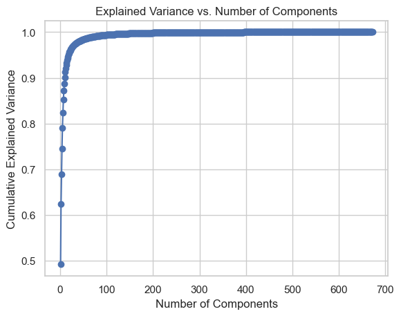

Neurological Disability Hand Function Identification
CONCEPT
This project aims to address the critical need for assisting patients with neurological disabilities or limb amputations in regaining the ability to perform fundamental hand functions. To achieve this, we leverage EEG (Electroencephalogram) data analysis to identify and understand simple hand movements.
DATA
There are 12 subjects in total, 10 series of trials for each subject, and approximately 30 trials within each series. The number of trials varies for each series. The training set contains the first 8 series for each subject. The test set contains the 9th and 10th series. For each GAL, the project is aimed to detect 6 events always occuring in the same order:
- HandStart
- FirstDigitTouch
- BothStartLoadPhase
- LiftOff
- Replace
- BothReleased
PROCESS
The development of a predictive model has involved the implementation of the following procedural steps:
- Exploratory Data Analysis: The data underwent a cleaning process and was filtered using the Butterworth Filter. Subsequently, it identified and extracted data for each class based on processed labels. Principal Component Analysis (PCA), a dimensionality reduction technique, was employed to decrease the number of features, enhancing overall efficiency.
- Model Implementation: Various models, including Random Forest, K Nearest Neighbor, XGBoost, and Deep Learning models such as CNN and ResNet, were implemented. Among these, ResNet demonstrated superiority, achieving an accuracy of 32%. This accuracy is more than double of a random guess, which, for a 7-class classification task, would be 14.3%.
- Future Work: To elevate the accuracy of the models and delve deeper into the understanding of EEG signals, several avenues for future work are suggested. Feature engineering stands out as a critical next step to extract more pertinent information from the data. Additionally, reevaluating the treatment of EEG signals as raw data and incorporating a temporal unit into the code could potentially enhance accuracy and provide richer insights into hand movements related to neurological disabilities.
Future Directions
To enhance the accuracy of the models and gain a deeper understanding of the EEG signals, several avenues for future work are proposed. Feature engineering is a crucial next step to extract more relevant information from the data. Furthermore, the treatment of EEG signals as raw data can be revised to incorporate a temporal unit into the code, potentially leading to increased accuracy and improved insights into neurological disability-related hand movements.
GitHub repository
Raw data

Processed data
Dimentionality reduction (principal component analysis)

Random forest evaluation